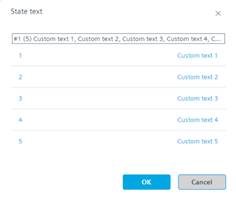
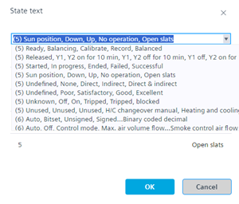
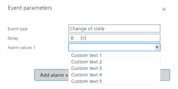
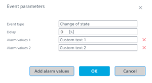

调整事件注册对象的自定义状态文本
该描述对于二进制和多状态对象有效。在不同对象中重复使用客户状态文本时，请确保信号编号具有相同的通道数。
1. Define the number of signals used for this data point
- A binary or multistate object is available.
Creating I/O data points
- Go to Building > Building structure.
- Right-click a device and select Go to engineering.
- Open the I/O configuration task.
- In the Plants navigation view, select the binary or multistate data point.
- In the Property view, select the Signal property.
- From the Signal drop-down list, select the number of channels for this data point (default is 3 channels).
- In the Number of states property, the number of used channels is displayed.
2. Define the custom state text
- In the Property view, select the State text property.
- Double-click in the State text field.
- The State text dialog opens.
- Enter the custom text for each channel.

or select existing standard texts.
- Click OK.

自定义文本可以重复用于同一设备内的其他对象（仅限相同数字通道）。
3. Create an event enrollment object
- Open the BACnet references task.
- Select the Projects tab.
- Select the device, and then the binary or multistate object.
- Right-click the binary or multistate object and select Create event enrollment object.
- Select the Overview tab.
- Select the created event enrollment.
- In the Property view, select the Event type property.
- From the Event type drop-down list, select the Change of state option.
- In the Property view, select the Event property states type property.
- From the Event property states type drop-down list, select the Unsigned value option.
4. Assign the custom state text to the alarm value
- In the Property view, select the Event parameters property.
- Double-click in the Event parameters field.
- The Event parameters dialog opens.
- From the Alarm values 1 drop-down list, select the alarm text.

- Click Add alarm values to extend the alarm functionality.
